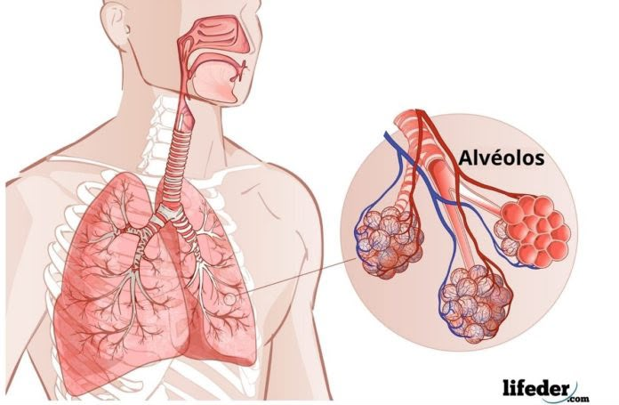

Oxígeno (O₂)
Dióxido de Carbono (CO₂)
Ritmo:
Esquema Anatómico

¿Cómo Funciona?
El intercambio de gases ocurre en los alvéolos pulmonares mediante difusión pasiva de forma continua e ininterrumpida.
1. Entrada de O₂
El oxígeno se transfiere hacia los eritrocitos al cruzar la membrana alvéolo-capilar.
2. Salida de CO₂
El dióxido de carbono es expulsado desde la sangre venosa hacia el alvéolo.
Proceso físico: Ley de Fick
Ciclo Automático